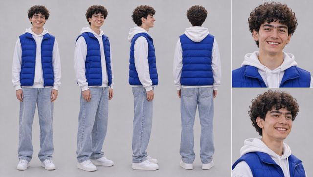
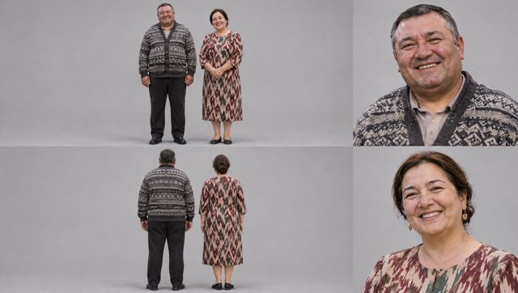
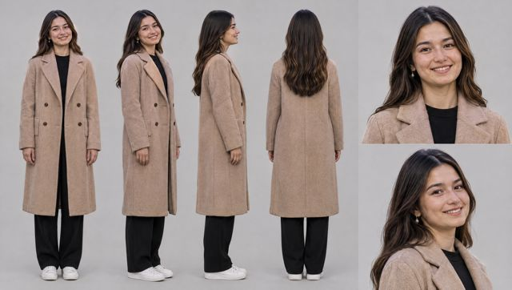
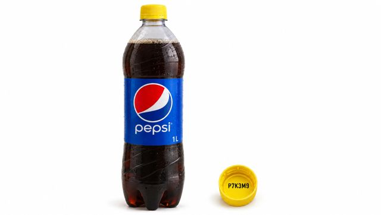
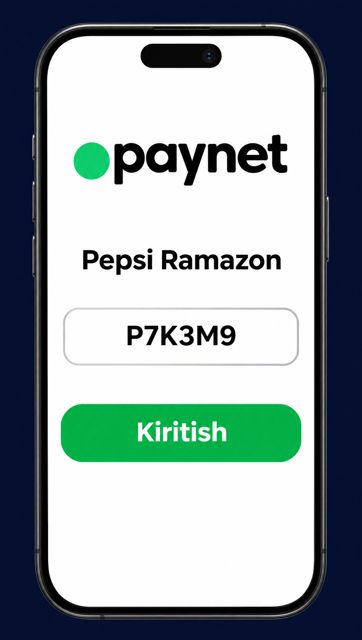

Pepsi Ramazon «Махалля» — кит для Seedance 2.5 · v3
Много коротких кадров, жёсткие склейки по биту, толпа как в презе, соседи дарят друг другу Pepsi, ребята играют руками. Рефы — карточки персонажей, локаций и предметов.
Скачать всё одним архивомМонтаж (по мастеру master_door)
| Время, с | Клип | Звук |
|---|---|---|
| 0,00–9,95 | 1 · Ифтар (6 кадров) | строки 1–2 за дверью |
| 9,95–16,95 | 2 · Дверь (7 кадров) | пауза-жесты, строки 3–4 |
| 16,95–26,82 | 3 · Дроп и код (10 кадров) + перебивки из 7 | дробь, дроп, куплет 2 |
| 26,82–34,74 | 4 · Призы и Kia (8 кадров) | куплет 3 |
| 34,74–39,05 | 5 · Финал (5 кадров) | Op chiqing, удар на 39,05 |
| 39,05–44 | 6 · Стол + пэкшот | хвост удара, шумы |
Склейки внутри клипов уже стоят на долях. В монтаже режь ещё мельче и вставляй перебивки из клипа 7: у него тот же аудио-реф, что у клипа 3, поэтому руки и рты попадают в бит. Звук Seedance глушим, кладём мастер.
Аудио
- master_door.mp3
Мастер для монтажа: строки 1–2 «за дверью» + пауза 3 с (40,7 с) - master_door.wav
То же в WAV - master_pause.mp3
Мастер без фильтра двери - audio_C2_door.mp3
Аудио-реф клипа 2 (7 с) - audio_C3a_street.mp3
Аудио-реф клипов 3 и 7 (10 с) - audio_C3b_prizes.mp3
Аудио-реф клипа 4 (8 с) - audio_C4_final.mp3
Аудио-реф клипа 5 (6 с)
Референсы
Карточки персонажей, локаций и предметов. Ключевых кадров больше нет: композицию задаёт текст промпта.
Персонажи

C01_leadЗаводила: кудрявый, синий жилет

C02_redКрасная олимпийка (большой барабан)

C03_varsityБелый бомбер с синими рукавами

C04_denimОчки, джинсовка (крышка с кодом)

C05_navyТёмно-синий флис

C06_fatherХозяин дома

C07_familyСемья: бабушка, дедушка, жена, дети

C08_uncle_auntieДядя и тётя (выигрыш 5 000)

C09_girlДевушка в бежевом пальто

C10_youngmanПарень в зелёном бомбере (100 000)
Локации


Предметы

P01_drums_doirasБарабаны-банки и дойры-крышки, без палочек


P02_pepsi_capБутылка и жёлтая крышка с кодом


P03_paynet_codePaynet: ввод кода

P04_paynet_winPaynet: +100 000

P05_kia_podiumKia на подиуме с бантом
Клипы и промпты
Клип 1 · Ифтар · 10 с
- Seedance 2.5 · Omni Reference · 16:9 · 10 с · звук вкл · без старт-кадра
- Аудио-реф: нет (песню кладём в монтаже)
Клип 2 · Дверь: «не-не-не» + строки 3–4 · 7 с
- Seedance 2.5 · Omni Reference · 16:9 · 7 с · звук вкл · без старт-кадра
Клип 3 · Дроп и код · 10 с
- Seedance 2.5 · Omni Reference · 16:9 · 10 с · звук вкл · без старт-кадра
Клип 4 · Призы и Kia · 8 с
- Seedance 2.5 · Omni Reference · 16:9 · 8 с · звук вкл · без старт-кадра
Клип 5 · Финал: Pepsi по кругу · 6 с
- Seedance 2.5 · Omni Reference · 16:9 · 6 с · звук вкл · без старт-кадра
Клип 6 · Финальный кадр: стол · 5 с
- Seedance 2.5 · Omni Reference · 16:9 · 5 с · звук вкл · без старт-кадра
- Аудио-реф: нет
Клип 7 · Перебивки: ребята играют (для монтажа) · 10 с
- Seedance 2.5 · Omni Reference · 16:9 · 10 с · звук вкл · без старт-кадра
- Аудио-реф тот же, что у клипа 3: кадры встают в монтаже синхронно
Порядок
- Сначала черновики 480p (draft), удачные финалим в 1080p.
- Если Seedance склеивает меньше кадров, чем написано, не страшно: в монтаже режем дальше и добавляем перебивки из клипа 7.
- Если реф-картинку вклеивает целиком как кадр, убери из клипа один-два D-рефа, содержание кадра останется в тексте.